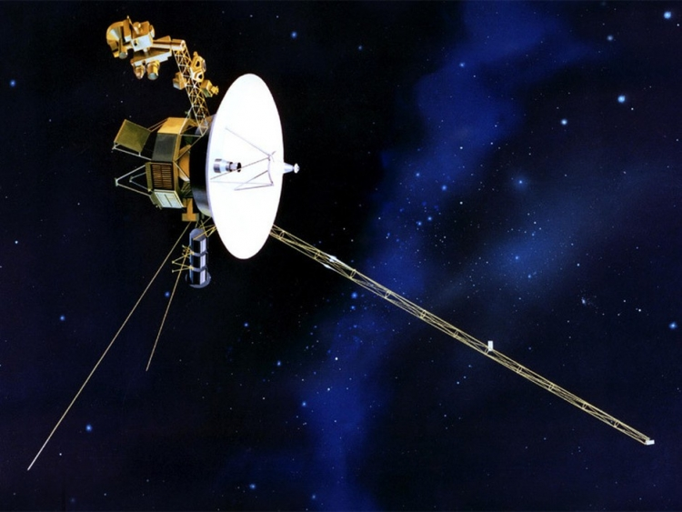
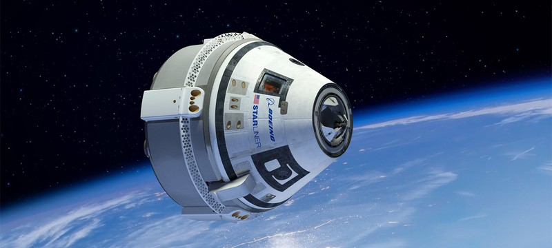
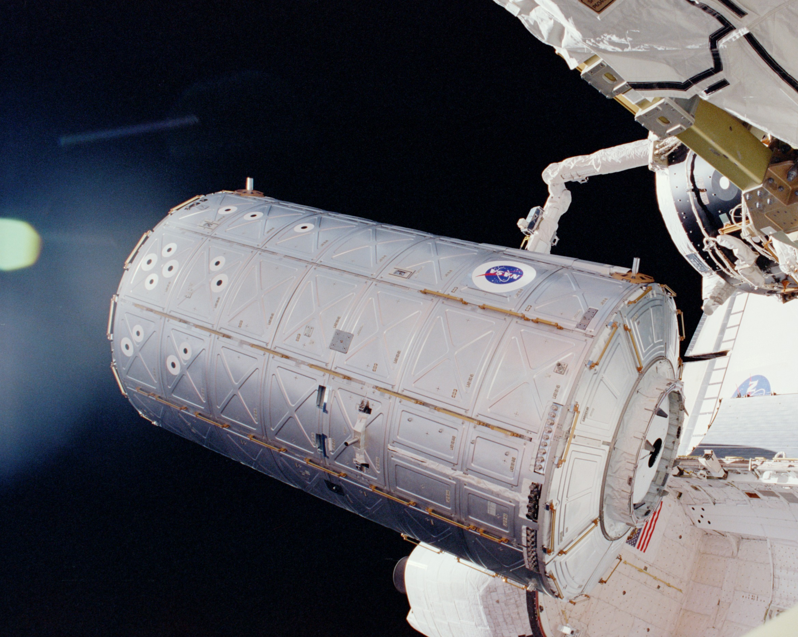
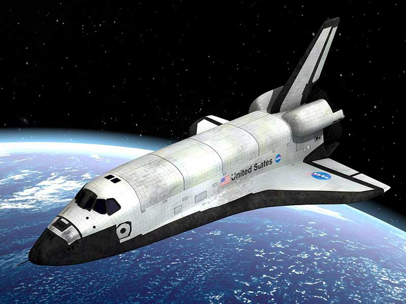
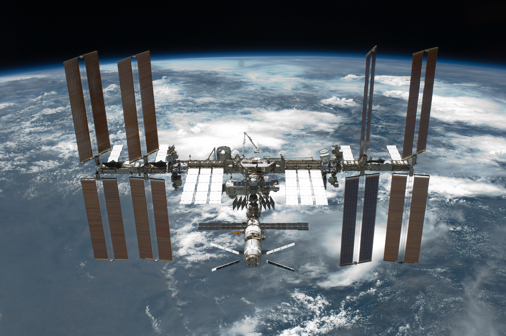

Исследовательские космические корабли для научных и разведывательных работ. • Предназначены для исследования астероидов, звёзд, планет и их спутников, высаживаться на поверхность астероидов, планет и звёзд или выводятся на орбиту вокруг них, а также предназначены для исследования галактик или Вселенной. • Определяют целями своей миссии возврат к месту старта с данными или пробами, или оставаться возле объекта после выполнения своей миссии из-за сложности и ненадобности возвращения.
Космический корабль в основном доставляемый на орбиту беспилотной ракетойносителем для космического эксперимента. Космический корабль для эвакуации экипажа с потерпевшей бедствие космической станции. Работает как в пилотируемом, так и в беспилотном режиме.
Автономная специализированная часть КЛА, способная выступать в роли самостоятельного КК. • По функциям бывают: – стыковочный, – посадочный, – разгонный.
Ракета в основном беспилотный космический корабль, способный достигать орбитальных высот планеты Земля, спутников планет, и других планет. • Является носителем полезного груза, (зонды, капсулы, разгонные блоки, модули и челноки). • Имеет более одной ступени, чтобы преодолеть земное притяжение и вывести полезный груз в космос.
Шаттл (челнок), как космический корабль – многоразовый, предназначен для разных задач, в том числе и доставки полезного груза на орбиту планет и их спутников, с возможностью дозаправки и продолжения миссии в космосе, или возвращения на Землю
КА предназначенный для долговременного пребывания людей на околопланетной орбите с целью проведения научных исследований в условиях космического пространства, разведки, наблюдений за поверхностью и атмосферой планеты, астрономических наблюдений. • Состоит из модулей, воздушных шлюзов, стыковочных устройств, и жилой капсулы, что доставляется на место ракетой или несколькими ракетами, и собирается стыковкой в необходимом порядке. • От ИСЗ отличается наличием экипажа, периодически сменяемого.
